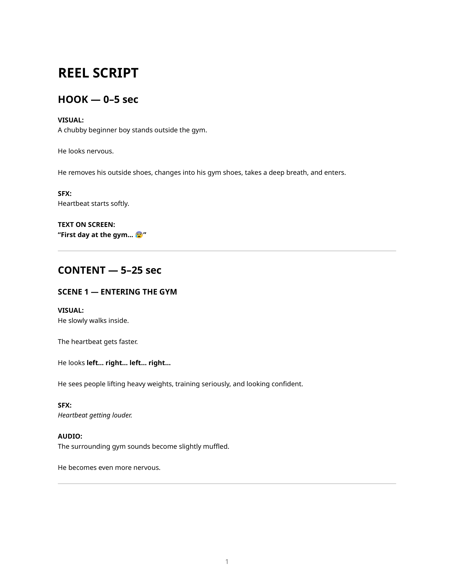

Content Strategy
& Scriptwriting.
Planning content around audience needs, business objectives and the next action a viewer should take — from content calendars and campaign concepts to short-form video scripts.
All strategic pillars, content themes, and scripts presented below originate directly from verified Notion databases and authentic production files. Calendar entries are explicitly categorized by actual workflow status (e.g., Idea, Planned, Drafted, Publish) rather than claiming unverified live publishing or fabricated reach metrics.
Bethel Express & Impex is a commercial international logistics, air freight, sea cargo, and student relocation specialist headquartered in Chennai, India. Their customer base spans non-resident Indians (NRIs), overseas students, emigrating families, and export-driven regional manufacturers.
- 01 Demystify international regulations: Replace customs confusion and prohibited-item uncertainty with clear, actionable shipping checklists.
- 02 Alleviate cross-border anxiety: Show transparent parcel handling, packaging security, and route milestones to reassure senders.
- 03 Evoke cultural nostalgia: Connect home flavours, homemade delicacies, and family gifts directly to Chennai diaspora communities worldwide.
- 04 Drive direct inquiries: Direct viewers into immediate WhatsApp, counter pickup, or quote request conversations.
The Notion content calendar acts as the central editorial pipeline for scheduling seasonal diaspora spikes (student intake windows, Diwali/Pongal care packages, commercial expo shipments).
| Topic / Content Concept | Pillar Alignment | Status |
|---|---|---|
| The Chennai Nostalgia Box | Emotional Content (15%) | Idea |
| Are You Eligible? Export Checklist | Educational (25%) | Not Started |
| Loading… Preparing Your Shipment | Solutions (30%) | Idea |
| Google Maps Shipment Route Visualizer | Trust & Credibility (10%) | Idea |
| Airport Departure-Board Concept | Customer Problems (20%) | Idea |
| Excess Airline Baggage vs Air Cargo Cost | Customer Problems (20%) | Not Started |
| How Fragile Goods Are Boxed in Chennai | Trust & Credibility (10%) | Not Started |
ALCAS Digital Agency is a B2B digital growth and performance marketing firm specializing in custom web architecture, search engine optimization (SEO), conversion rate optimization (CRO), and multi-channel paid acquisition (Google Ads & Meta Ads).
- 01 Frame technical authority: Counter low-value agency vanity metrics by demonstrating deep expertise in revenue attribution, speed, and conversion funnels.
- 02 Diagnose business bottlenecks: Uncover the root causes of failed advertising spend and low website conversion rates for founders and CMOs.
- 03 Drive diagnostic lead capture: Funnel qualified prospects into free website audits, speed benchmarks, and structural consultations.
| Topic / Content Concept | Theme Pillar | Status |
|---|---|---|
| Beyond Logos: Why Social Media Branding Matters | Trust & Brand Building | Published |
| Why Your Website Isn't Getting Leads (5 Flaws) | Business Problems | Publish |
| SEO vs Google Ads: Which Is Better? | Comparisons & Myths | Publish |
| Website Audit Checklist: 10 Critical Conversion Fixes | Educational Content | Publish |
| Free Website Audit Offer & Diagnostic Form | Lead Generation | Publish |
| B2B Conversion Rate Optimization Teardown | Case Studies | Editing |
| Why Boosted Posts Waste Advertising Capital | Business Problems | Publish |
Featured Strategic Concepts
Bethel Express & Impex.
Conceptual campaign frameworks engineered to bridge emotional resonance with commercial air and sea cargo logistics, shifting communication from dry freight specifications to meaningful human outcomes.
The Chennai Nostalgia Box “Flavours of Home, Shipped Worldwide”
Re-framing international courier shipping not as boxes of weight, but as a preserved cultural care package. Showcases iconic Chennai essentials: homemade vadam, filter coffee powder, traditional sweets, and mother's hand-packed savouries safely reaching NRI homes in the UK, USA, and Gulf.
Loading… Preparing Your Shipment “Visible White-Glove Security”
A motion-first reel concept using a tech-inspired loading sequence (0% to 100%) to illustrate behind-the-scenes export care: multi-layer bubble wrap, moisture barrier seals, corner-guard boxing, weighing calibration, and airway bill documentation.
Shipment Tracking as a Route Dashboard “End-to-End Transit Clarity”
An intuitive visual graphic modeled after digital route navigation dashboards (Chennai Airport MAA → Transit Hub DXB/LHR → Final Destination Doorstep), visualizing milestone clearance points rather than obscure logistics codes.
Are You Eligible? & Regulatory Checklists “Hassle-Free Airport Clearance”
A high-utility decision-tree checklist educating students and families on country-specific customs limits (batteries, Ayurvedic liquids, dry spices, textiles) before counter arrival to prevent confiscation or customs fines.
Beginner-Friendly Gym Reel Script
AV Fitness Case Study.
A full 30–40 second short-form video script engineered to dismantle "first-day gym intimidation" for beginners in North Chennai, combining relatable narrative pacing, sensory audio cues, and authentic Tamil dialogue.
Client Separation Disclosure: AV Fitness is a dedicated physical fitness center operating in Vyasarpadi and Perambur, Chennai. This scriptwriting and social media audit workstream is completely separate from Bethel Express and ALCAS Digital Agency.
Visual: A chubby beginner boy stands outside the gym looking noticeably anxious. He stops, removes outside street shoes, slips into clean gym shoes, takes a nervous deep breath, and steps through the doorway.
Visual: Slow walk inside. The camera tracks his perspective looking left… right… left. He sees fit members lifting heavy barbells with absolute confidence.
Visual: The gym master gently places a reassuring hand on his shoulder. The boy freezes. The coach smiles warmly and gestures around the room.
Visual Progression: The boy looks around slowly: one member is focused on cardio, another is working with a coach, another is adjusting weights. Nobody is staring at him or judging him.
Visual: The boy takes a long exhale. His facial expression softens from tension to quiet determination. The muffled audio clears, and the heartbeat sound fades out.
He walks calmly toward the weights rack, picks up a beginner dumbbell, and initiates his session.
Visual Montage: Dynamic cuts showing certified trainers actively coaching first-timers, adjusting squat posture, and celebrating member milestones.
Script & Audit Documentation

The Editorial Conversion Loop
Connecting Problems to Business Actions.
Content planning succeeds when every creative asset follows a deliberate operational chain — linking raw audience friction directly to an unambiguous business outcome.
Audience Problem
Identify acute pain: gym intimidation, customs confusion, or hidden ad budget waste.
Content Objective
Define psychological goal: alleviate fear, demonstrate technical authority, or clarify rules.
Format Selection
Choose optimal vehicle: narrative short reel, educational carousel, or route checklist.
Hook & Concept
Engage immediate attention: heartbeat audio cue, nostalgia box, or audit scorecard.
Clear Call to Action
Deliver direct invitation: book free audit, visit Perambur branch, or message on WhatsApp.
Desired Action
Measurable outcome: walk-in trial, shipping quote request, or inbound diagnostic lead.
Authenticity Audit & Workflow Status
In accordance with editorial portfolio ethics, this table provides an explicit audit trail of all assets discussed across this case study, distinguishing backlog planning from verified publication.
| Workstream / Client | Document / System | Cataloged Scope | Status Distribution | Verification Source |
|---|---|---|---|---|
| Bethel Express & Impex | Editorial Notion Calendar & Content Strategy | 47 Total Entries | 41 Not Started 6 Ideas | Authentic Notion Database URL & Strategy File (Accessible & Verified) |
| ALCAS Digital Agency | Multi-Channel Content Calendar (IG & LinkedIn) | 56 Total Entries | 5 Published 44 Publish 7 In Prod / Other | Authentic Notion Database URL & Channel Workspaces (Accessible & Verified) |
| AV Fitness (Vyasarpadi) | Short-Form Gym Reel Production Script | 3-Page Production Document | Drafted Production Script | Authentic PDF Document (AV_Fitness_Beginner_Gym_Reel_Script.pdf) |
| AV Fitness (Vyasarpadi) | Instagram Profile Audit & Pillars Report | 3-Page Strategic Audit | Completed Audit | Authentic PDF Document (AV_Fitness_Instagram_Audit_Report.pdf) |